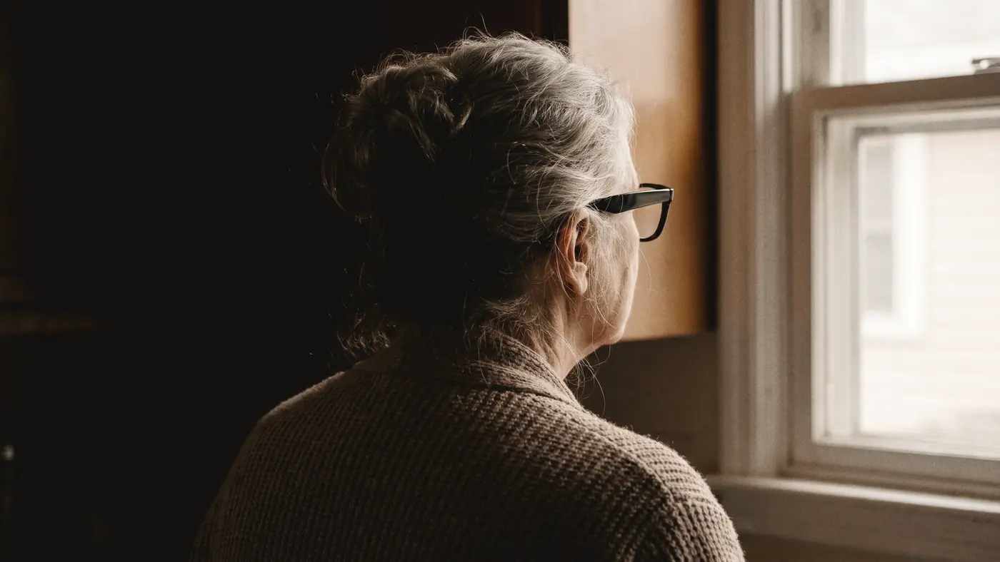
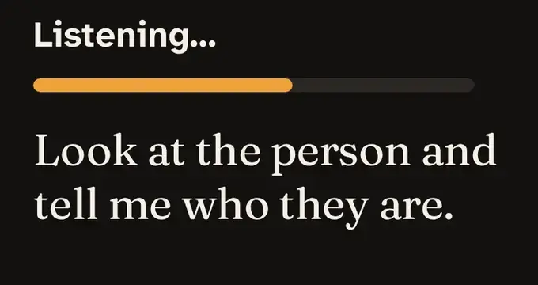
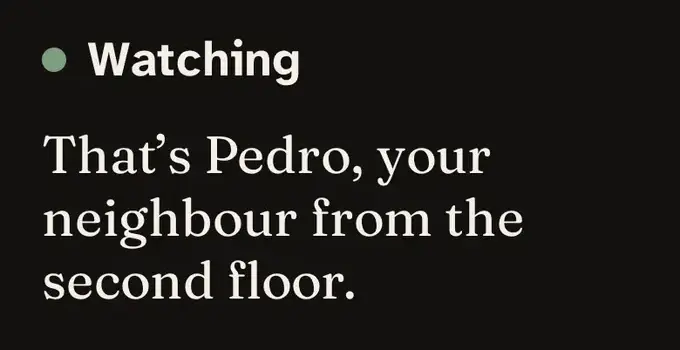
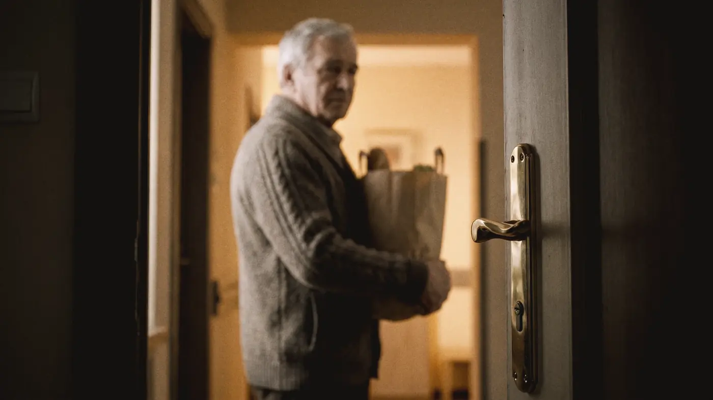

Growing old doesn’t mean leaving home.
Vela lives in a pair of Meta Ray-Ban glasses. When someone you know comes into view, she tells you who they are. For people who live on their own and want to keep it that way.
“That’s Pedro, your neighbour from the second floor.”
How it works
-

1Introduce them once.
Look at the person and say who they are:
This is Pedro, my neighbour.
Vela saves the name and the relation, and nothing else. -

2Then she stays quiet.
Vela looks through the glasses and says nothing until someone you introduced is in front of you. Then one short line, softly, once.

Tuesday. A knock at the door. You know the face.
“That’s Pedro, your neighbour from the second floor.”
The people who matter.
Vela knows only the people you introduce. Everyone else gets silence.
-
Marta. Your daughter.
-
Pedro. Your neighbour from the second floor.
-
Someone new. Vela says nothing.
For living on your own, on your own terms.
Vela is for people who run their own day and would like a little help with names: at the door, at the market, at a family lunch. It is not designed for advanced dementia.
40.2% of women over 65 in the EU live alone, and 21.8% of men.
Source: Eurostat, EU-27, 2018 (all sources).
Faces never leave the phone.
- Only what you tell her. Vela saves a face only when you tell her who the person is.
- Matched on the phone. Saved faces and the matching stay on the phone. Your voice is processed on a server; a face never is.
- Strangers are not kept. Each photo from the glasses is checked on the phone, then dropped. For someone you have not introduced, Vela stays silent and keeps nothing.
- Easy to forget. Anyone can ask to be removed. One tap on Remove in the app deletes their name and face.
What we tested: our own offline test of the app’s face model, with 15 photos of 5 people (2 photos each to enrol) and 4 strangers.
Result: 0 of 156 stranger pairs matched; 4 in 5 photos of known people were recognised. A small test. Vela evaluation, “eval” folder of the repository (sources).
€9 a month.
Plus the glasses: Meta Ray-Ban, bought once at the optician. You pay for Vela yourself, and the names you teach her are yours.
Planned price, set by the Vela team in November 2026. Vela is a prototype and not on sale yet.
Try the prototype on your phone.
The demo uses your phone’s camera while the glasses app is being tested. It will ask to use the camera and microphone. Introduce someone, then point the phone at them.
Open the demo